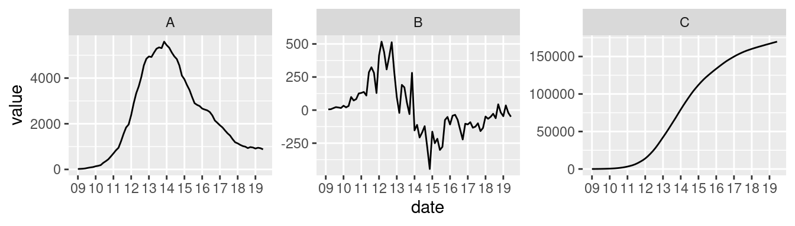

Data Science Concepts – Final Exam
Make-Up questions for the final exam
First Name, Last Name: __________________________
Matric. No.: _____________________________
Signature: _____________________________
1 Instructions
- Whenever you see lines “______” or checkboxes \(\square\) please fill in the blanks or check the boxes within the text.
- Whenever you see (ANSWER ON BACKSIDE/EXTRA-SHEET) please write your answer on the backside of the sheet or on an extra sheet starting with the question number and subnumbers.
THIS IS A MOCK EXAM! In the real exam
- there will also be questions on different topics
- you will know the total points and the points per question before
- you will be graded by the percentage of points achieved and there will be 100 points in total
- the points you achieved will be scaled up by a factor of 1.2
- That mean for example: 50 points count as 60, 80 points count as 96. So, you do not need to solve all questions to achieve the best grade.
- The factor may be adjusted to account for the difficulty of the exam.
2 Questions
We define the tools of Data Science, Machine Learning, and Artificial Intelligence by the main outcomes they produce: Data Science (DS) produces insights, Machine Learning (ML) produces predictions, and Artificial Intelligence (AI) produces decisions.
- Based on this definition, how would you classify the following practices as DS, ML, or AI?
- A movie and TV show streaming company analyzes the customer satisfaction with their recommendation algorithm. ___
- A mobile phone company has a customer churn model which predicts the likelihood that a customer will cancel the contract in the next months. ___
- A fingerprint recognition system on a smartphone decides if a certain person can log in to use the smartphone. ___
- An insurance company uses a model and geo-referenced geological and meteorological data to quantify the risk of damage from natural disasters for every building insured. ___
- Analysts try to understand the main causes for the results of a referendum being party affiliation, gender, age, or the place of residence of voters. ___
- A chatbot answers questions which humans write in a chatbox on a website. ___
- (ANSWER ON BACKSIDE/EXTRA-SHEET) Think of a company running an online dating application where users can search for, contact, and chat with potential dating partners. Give a brief example of potential applications of Data Science, Machine Learning, and Artificial Intelligence of that company.
- Based on this definition, how would you classify the following practices as DS, ML, or AI?
This is a visualization of the data science process.

Assing the terms Import, Tidy, Transform, Visualize, Model, Communicate to the following activities.- Creating a variable
yearandgdpin a data frame from the columnsyear_1950,year_1951, …,year_2022which have values for GDP.
___________________
- Creating a new variable
log_gdpby taking the logarithm of the variable ‘gdp’.
___________________
- Loading a data frame from a csv file.
___________________
- Rendering a report from a markdown file showing the results of a growth analysis.
___________________
- Creating a scatter plot of the variables
log_gdpandyear.
___________________
- Fitting a line with
log_gdpas dependent andyearas independent variable.
___________________
- Creating a variable
Date frames. Which of the following is correct?
\(\square\) A data frame can store data vectors of different types as variables.
\(\square\) A data frame can store data vectors of different lengths as variables.
When you create a vector with entries of different data types, types will be coerced. What will be the output of the vector created with
c(3, TRUE, 4, FALSE)?\(\square\)
[1] 3 0 4 1\(\square\)
[1] 3 1 4 0\(\square\)
[1] 3 4\(\square\)
[1] TRUE TRUE TRUE FALSEThe vector
c(160,200,240,250,250,400,600)is the vector of 7 incomes of a group of people. Which of the following statements is correct (there maybe multiple or no correct answer!).\(\square\) The median income is 250
\(\square\) The mean income is 600
\(\square\) By adding an 8th value of your choice you can create a vector which median is 400
\(\square\) By adding an 8th value of your choice you can create a vector which mean is 400
In the context of predictive compared to explanatory inferential questions, describe if it is useful to split the data into training and testing data. Describe for what purpose it is useful or why it is not necessary.
(ANSWER ON BACKSIDE/EXTRA-SHEET)
This scatter plot and linear model fit uses is made using thepenguinsdata frame filtered for the Chinstrap and Gentoo penguins only.Model 1: Below is the output of the corresponding linear model for
bill_depth_mm ~ flipper_length_mm.# A tibble: 2 × 5 term estimate std.error statistic p.value <chr> <dbl> <dbl> <dbl> <dbl> 1 (Intercept) 33.3 2.09 16.0 1.28e-36 2 flipper_length_mm -0.0816 0.00995 -8.19 4.06e-14The
r-squaredvalue of Model 1 is 0.266306.Model 2: Below is the output of the model with interaction effects of species
bill_depth_mm ~ flipper_length_mm * species.# A tibble: 4 × 5 term estimate std.error statistic p.value <chr> <dbl> <dbl> <dbl> <dbl> 1 (Intercept) 0.335 2.65 0.126 9.00e- 1 2 flipper_length_mm 0.0924 0.0135 6.83 1.22e-10 3 speciesGentoo -8.45 3.57 -2.36 1.91e- 2 4 flipper_length_mm:speciesGentoo 0.0140 0.0175 0.804 4.22e- 1The
r-squaredvalue of Model 2 is 0.8389515.- For Model 1: Interpret intercept, coefficient and R-squared! What does the intercept mean quantitatively? What does the coefficient tell us quantitatively about the relation between flipper length and bill depth? What percentage of the variance in bill depth is explained by flipper length? Is it a good model fit?
- For Model 2: Which species has been automatically chosen as the reference category? The model describes two lines, one for each species, each with an own intercept and slope. Explain how we can infer intercept and slope for each species? Explain for each species how a mm in flipper length changes bill depth on average! Sketch the two lines in the plot above.
- Compare the variance explained of the new model with the model without species. Which model is better? Explain!
- In comparison of coefficients of Model 1 and Model 2, does something appear paradoxical? If yes, how is this “paradox” called? Explain!
Using the confusion matrix
 A CoViD-19 breath analyzer was developed. The device can analyze the exhalation of a person and makes a prediction if that person has CoViD-19 or not. For testing the device, the breaths of 10,000 persons were analyzed and additionally the persons were PCR-tested to check if they really had CoViD-19. The CoViD-19 prevalence was 10%. That means 1,000 from the 10,000 got CoViD-19. The following were the results in detail: 910 were breath-tested positive and had CoViD-19, 90 were breath-tested negative but had CoViD-19, 60 were breath-tested positive but were not infected with CoViD-19, and 8940 were breath-tested negative and were indeed not infected with CoViD-19.
A CoViD-19 breath analyzer was developed. The device can analyze the exhalation of a person and makes a prediction if that person has CoViD-19 or not. For testing the device, the breaths of 10,000 persons were analyzed and additionally the persons were PCR-tested to check if they really had CoViD-19. The CoViD-19 prevalence was 10%. That means 1,000 from the 10,000 got CoViD-19. The following were the results in detail: 910 were breath-tested positive and had CoViD-19, 90 were breath-tested negative but had CoViD-19, 60 were breath-tested positive but were not infected with CoViD-19, and 8940 were breath-tested negative and were indeed not infected with CoViD-19.Fill out the values in this confusion matrix including TP, FP, FN, and TN
PP = PN = P = N = Compute the sensitivity (fractional statmente like 100/1000 is enough)! ________
Analogously, compute the specificity. ________
Now, we assume that the computed sensitivity and the specificity are characteristics of the breath analyzer device. 10,000 new persons are tested but the the prevalence is only 1%. What is the expected number of true positives (TP)? ________
Each facet in the following graph shows a time-series derived from the smoothed daily new cases of COVID-19 in Germany from the “Our World in Data” dataset. The data shows the first wave 2020. The x-axis marks week number of the year. For example, mark “09” marks the beginning of week 9.

- Time series A is called “Daily new cases”.
What does B show: ________________________________________
What does C show: ________________________________________
In which week was the maximimum for new cases: __________________
What happens in B in this week? _________________________ - Calculus question: Which time series is the derivative of which? Which is a second derivative of which? Complete three sentences and completely describe the calculus relations:
___ is the derivative of ___
___ is the derivative of ___
___ is the second derivative of ___ - In the beginning the growth of cases is very close to exponential growth. Approximately in which week does the exponential growth ends? _________
- Time series A is called “Daily new cases”.
(ANSWER ON BACKSIDE/EXTRA-SHEET) Below you see the plot of an artificial dataset of five observations and two variables visualized in the two-dimensional coordinate system. There is also the dendrogram of hierarchical clustering.
Explain how hierarchical clustering works using the example data. Explain what the algorithm does step by step! Read from the dendrogram: When we want two clusters, which point(s) belong to one cluster and which to the other cluster?